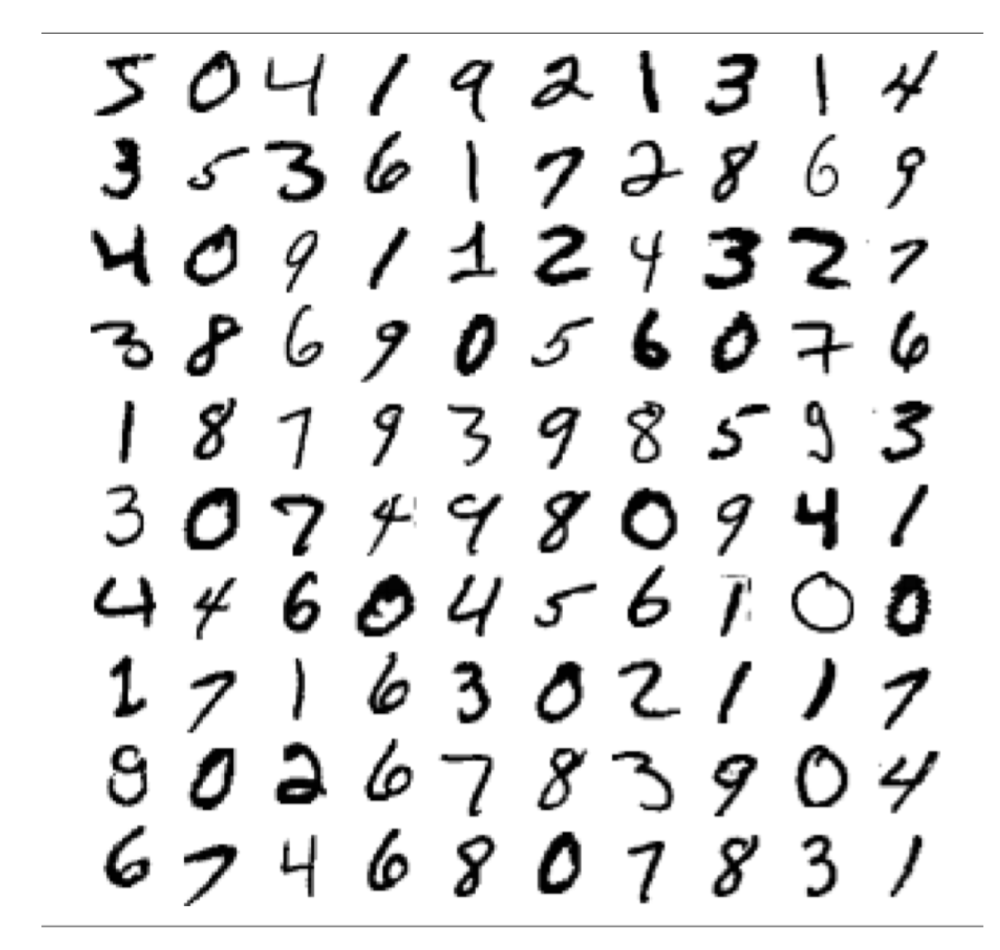
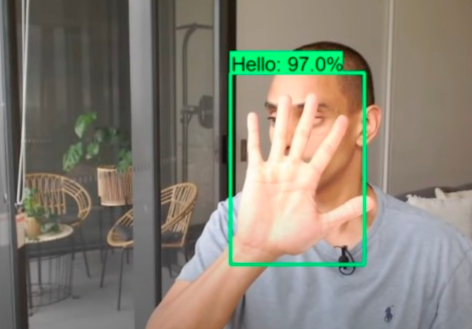
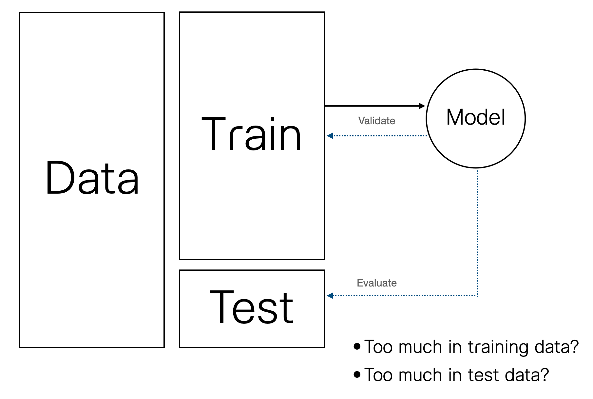

X V1 V2 V3 V4 V5 V6
1 1 -1.3598071 -0.07278117 2.5363467 1.3781552 -0.33832077 0.46238778
2 2 1.1918571 0.26615071 0.1664801 0.4481541 0.06001765 -0.08236081
3 3 -1.3583541 -1.34016307 1.7732093 0.3797796 -0.50319813 1.80049938
4 4 -0.9662717 -0.18522601 1.7929933 -0.8632913 -0.01030888 1.24720317
5 5 -1.1582331 0.87773675 1.5487178 0.4030339 -0.40719338 0.09592146
6 6 -0.4259659 0.96052304 1.1411093 -0.1682521 0.42098688 -0.02972755
V7 V8 V9 V10 V11 V12
1 0.23959855 0.09869790 0.3637870 0.09079417 -0.5515995 -0.61780086
2 -0.07880298 0.08510165 -0.2554251 -0.16697441 1.6127267 1.06523531
3 0.79146096 0.24767579 -1.5146543 0.20764287 0.6245015 0.06608369
4 0.23760894 0.37743587 -1.3870241 -0.05495192 -0.2264873 0.17822823
5 0.59294075 -0.27053268 0.8177393 0.75307443 -0.8228429 0.53819555
6 0.47620095 0.26031433 -0.5686714 -0.37140720 1.3412620 0.35989384
V13 V14 V15 V16 V17 V18
1 -0.9913898 -0.3111694 1.4681770 -0.4704005 0.20797124 0.02579058
2 0.4890950 -0.1437723 0.6355581 0.4639170 -0.11480466 -0.18336127
3 0.7172927 -0.1659459 2.3458649 -2.8900832 1.10996938 -0.12135931
4 0.5077569 -0.2879237 -0.6314181 -1.0596472 -0.68409279 1.96577500
5 1.3458516 -1.1196698 0.1751211 -0.4514492 -0.23703324 -0.03819479
6 -0.3580907 -0.1371337 0.5176168 0.4017259 -0.05813282 0.06865315
V19 V20 V21 V22 V23 V24
1 0.40399296 0.25141210 -0.018306778 0.277837576 -0.11047391 0.06692807
2 -0.14578304 -0.06908314 -0.225775248 -0.638671953 0.10128802 -0.33984648
3 -2.26185710 0.52497973 0.247998153 0.771679402 0.90941226 -0.68928096
4 -1.23262197 -0.20803778 -0.108300452 0.005273597 -0.19032052 -1.17557533
5 0.80348692 0.40854236 -0.009430697 0.798278495 -0.13745808 0.14126698
6 -0.03319379 0.08496767 -0.208253515 -0.559824796 -0.02639767 -0.37142658
V25 V26 V27 V28 Class
1 0.1285394 -0.1891148 0.133558377 -0.02105305 0
2 0.1671704 0.1258945 -0.008983099 0.01472417 0
3 -0.3276418 -0.1390966 -0.055352794 -0.05975184 0
4 0.6473760 -0.2219288 0.062722849 0.06145763 0
5 -0.2060096 0.5022922 0.219422230 0.21515315 0
6 -0.2327938 0.1059148 0.253844225 0.08108026 0Introduction to ML
What’s Machine Learning?
7-segment display problem
Classifier: Rule-base
Classifier: Rule-base
Handwritten digit recognition
Handwritten digit recognition
Classifier: ML
Example
Example

Example
|  |
Example
Types of ML
Supervised Learning
Unsupervised Learning
Reinforcement Learning
Modeling Process
Supervised Learning
วัตถุประสงค์หลักของ supervised learning คือการหา algorithm $f(x)$ ที่สามารถทำนายหรือจำแนกตัวแปรตามของหน่วยข้อมูลด้วยตัวแปรอิสระ (หรือ features) ที่มี ได้ดีที่สุด
Regression problem
Classification problem
Classification problem
Logistic regression
K-NN algorithm
Decision Tree
Random Forest
Boosting algorithms
Artificial neural networks
…
Dropout dataset
Dropout dataset
'data.frame': 284807 obs. of 30 variables:
$ X : int 1 2 3 4 5 6 7 8 9 10 ...
$ V1 : num -1.36 1.192 -1.358 -0.966 -1.158 ...
$ V2 : num -0.0728 0.2662 -1.3402 -0.1852 0.8777 ...
$ V3 : num 2.536 0.166 1.773 1.793 1.549 ...
$ V4 : num 1.378 0.448 0.38 -0.863 0.403 ...
$ V5 : num -0.3383 0.06 -0.5032 -0.0103 -0.4072 ...
$ V6 : num 0.4624 -0.0824 1.8005 1.2472 0.0959 ...
$ V7 : num 0.2396 -0.0788 0.7915 0.2376 0.5929 ...
$ V8 : num 0.0987 0.0851 0.2477 0.3774 -0.2705 ...
$ V9 : num 0.364 -0.255 -1.515 -1.387 0.818 ...
$ V10 : num 0.0908 -0.167 0.2076 -0.055 0.7531 ...
$ V11 : num -0.552 1.613 0.625 -0.226 -0.823 ...
$ V12 : num -0.6178 1.0652 0.0661 0.1782 0.5382 ...
$ V13 : num -0.991 0.489 0.717 0.508 1.346 ...
$ V14 : num -0.311 -0.144 -0.166 -0.288 -1.12 ...
$ V15 : num 1.468 0.636 2.346 -0.631 0.175 ...
$ V16 : num -0.47 0.464 -2.89 -1.06 -0.451 ...
$ V17 : num 0.208 -0.115 1.11 -0.684 -0.237 ...
$ V18 : num 0.0258 -0.1834 -0.1214 1.9658 -0.0382 ...
$ V19 : num 0.404 -0.146 -2.262 -1.233 0.803 ...
$ V20 : num 0.2514 -0.0691 0.525 -0.208 0.4085 ...
$ V21 : num -0.01831 -0.22578 0.248 -0.1083 -0.00943 ...
$ V22 : num 0.27784 -0.63867 0.77168 0.00527 0.79828 ...
$ V23 : num -0.11 0.101 0.909 -0.19 -0.137 ...
$ V24 : num 0.0669 -0.3398 -0.6893 -1.1756 0.1413 ...
$ V25 : num 0.129 0.167 -0.328 0.647 -0.206 ...
$ V26 : num -0.189 0.126 -0.139 -0.222 0.502 ...
$ V27 : num 0.13356 -0.00898 -0.05535 0.06272 0.21942 ...
$ V28 : num -0.0211 0.0147 -0.0598 0.0615 0.2152 ...
$ Class: int 0 0 0 0 0 0 0 0 0 0 ...Dropout dataset
0 1
284315 492 X V1 V2 V3
Min. : 1 Min. :-56.40751 Min. :-72.71573 Min. :-48.3256
1st Qu.: 71202 1st Qu.: -0.92037 1st Qu.: -0.59855 1st Qu.: -0.8904
Median :142404 Median : 0.01811 Median : 0.06549 Median : 0.1799
Mean :142404 Mean : 0.00000 Mean : 0.00000 Mean : 0.0000
3rd Qu.:213606 3rd Qu.: 1.31564 3rd Qu.: 0.80372 3rd Qu.: 1.0272
Max. :284807 Max. : 2.45493 Max. : 22.05773 Max. : 9.3826
V4 V5 V6 V7
Min. :-5.68317 Min. :-113.74330 Min. :-26.1605 Min. :-43.5572
1st Qu.:-0.84864 1st Qu.: -0.69160 1st Qu.: -0.7683 1st Qu.: -0.5541
Median :-0.01985 Median : -0.05434 Median : -0.2742 Median : 0.0401
Mean : 0.00000 Mean : 0.00000 Mean : 0.0000 Mean : 0.0000
3rd Qu.: 0.74334 3rd Qu.: 0.61193 3rd Qu.: 0.3986 3rd Qu.: 0.5704
Max. :16.87534 Max. : 34.80167 Max. : 73.3016 Max. :120.5895
V8 V9 V10 V11
Min. :-73.21672 Min. :-13.43407 Min. :-24.58826 Min. :-4.79747
1st Qu.: -0.20863 1st Qu.: -0.64310 1st Qu.: -0.53543 1st Qu.:-0.76249
Median : 0.02236 Median : -0.05143 Median : -0.09292 Median :-0.03276
Mean : 0.00000 Mean : 0.00000 Mean : 0.00000 Mean : 0.00000
3rd Qu.: 0.32735 3rd Qu.: 0.59714 3rd Qu.: 0.45392 3rd Qu.: 0.73959
Max. : 20.00721 Max. : 15.59499 Max. : 23.74514 Max. :12.01891
V12 V13 V14 V15
Min. :-18.6837 Min. :-5.79188 Min. :-19.2143 Min. :-4.49894
1st Qu.: -0.4056 1st Qu.:-0.64854 1st Qu.: -0.4256 1st Qu.:-0.58288
Median : 0.1400 Median :-0.01357 Median : 0.0506 Median : 0.04807
Mean : 0.0000 Mean : 0.00000 Mean : 0.0000 Mean : 0.00000
3rd Qu.: 0.6182 3rd Qu.: 0.66251 3rd Qu.: 0.4931 3rd Qu.: 0.64882
Max. : 7.8484 Max. : 7.12688 Max. : 10.5268 Max. : 8.87774
V16 V17 V18
Min. :-14.12985 Min. :-25.16280 Min. :-9.498746
1st Qu.: -0.46804 1st Qu.: -0.48375 1st Qu.:-0.498850
Median : 0.06641 Median : -0.06568 Median :-0.003636
Mean : 0.00000 Mean : 0.00000 Mean : 0.000000
3rd Qu.: 0.52330 3rd Qu.: 0.39968 3rd Qu.: 0.500807
Max. : 17.31511 Max. : 9.25353 Max. : 5.041069
V19 V20 V21
Min. :-7.213527 Min. :-54.49772 Min. :-34.83038
1st Qu.:-0.456299 1st Qu.: -0.21172 1st Qu.: -0.22839
Median : 0.003735 Median : -0.06248 Median : -0.02945
Mean : 0.000000 Mean : 0.00000 Mean : 0.00000
3rd Qu.: 0.458949 3rd Qu.: 0.13304 3rd Qu.: 0.18638
Max. : 5.591971 Max. : 39.42090 Max. : 27.20284
V22 V23 V24
Min. :-10.933140 Min. :-44.80774 Min. :-2.83663
1st Qu.: -0.542350 1st Qu.: -0.16185 1st Qu.:-0.35459
Median : 0.006782 Median : -0.01119 Median : 0.04098
Mean : 0.000000 Mean : 0.00000 Mean : 0.00000
3rd Qu.: 0.528554 3rd Qu.: 0.14764 3rd Qu.: 0.43953
Max. : 10.503090 Max. : 22.52841 Max. : 4.58455
V25 V26 V27
Min. :-10.29540 Min. :-2.60455 Min. :-22.565680
1st Qu.: -0.31715 1st Qu.:-0.32698 1st Qu.: -0.070840
Median : 0.01659 Median :-0.05214 Median : 0.001342
Mean : 0.00000 Mean : 0.00000 Mean : 0.000000
3rd Qu.: 0.35072 3rd Qu.: 0.24095 3rd Qu.: 0.091045
Max. : 7.51959 Max. : 3.51735 Max. : 31.612200
V28 Class
Min. :-15.43008 Min. :0.000000
1st Qu.: -0.05296 1st Qu.:0.000000
Median : 0.01124 Median :0.000000
Mean : 0.00000 Mean :0.001728
3rd Qu.: 0.07828 3rd Qu.:0.000000
Max. : 33.84781 Max. :1.000000 Logistic Regression
\[ P(Y=1)=\frac{exp(b_0+b_1X)}{1+exp(b_0+b_1X)} \]

Logistic Regression: Model Building
Call:
glm(formula = Class ~ ., family = binomial(), data = dat[, -1])
Deviance Residuals:
Min 1Q Median 3Q Max
-4.9178 -0.0294 -0.0196 -0.0127 4.5642
Coefficients:
Estimate Std. Error z value Pr(>|z|)
(Intercept) -8.619209 0.144759 -59.542 < 2e-16 ***
V1 0.048542 0.039578 1.226 0.2200
V2 -0.040986 0.049339 -0.831 0.4061
V3 0.014105 0.044084 0.320 0.7490
V4 0.708143 0.073259 9.666 < 2e-16 ***
V5 0.036749 0.061403 0.598 0.5495
V6 -0.088469 0.075964 -1.165 0.2442
V7 -0.006211 0.055364 -0.112 0.9107
V8 -0.194838 0.028723 -6.783 1.17e-11 ***
V9 -0.239997 0.111598 -2.151 0.0315 *
V10 -0.790455 0.100691 -7.850 4.15e-15 ***
V11 -0.005278 0.076072 -0.069 0.9447
V12 0.046741 0.085992 0.544 0.5868
V13 -0.322120 0.081002 -3.977 6.99e-05 ***
V14 -0.549678 0.062480 -8.798 < 2e-16 ***
V15 -0.092497 0.084158 -1.099 0.2717
V16 -0.219778 0.123587 -1.778 0.0753 .
V17 -0.004143 0.069147 -0.060 0.9522
V18 -0.002116 0.126394 -0.017 0.9866
V19 0.049997 0.095164 0.525 0.5993
V20 -0.285025 0.066955 -4.257 2.07e-05 ***
V21 0.392721 0.057987 6.773 1.27e-11 ***
V22 0.566075 0.128297 4.412 1.02e-05 ***
V23 -0.106056 0.062282 -1.703 0.0886 .
V24 0.152430 0.150054 1.016 0.3097
V25 -0.061627 0.128865 -0.478 0.6325
V26 -0.010602 0.190900 -0.056 0.9557
V27 -0.659682 0.137178 -4.809 1.52e-06 ***
V28 -0.244903 0.098728 -2.481 0.0131 *
---
Signif. codes: 0 '***' 0.001 '**' 0.01 '*' 0.05 '.' 0.1 ' ' 1
(Dispersion parameter for binomial family taken to be 1)
Null deviance: 7242.5 on 284806 degrees of freedom
Residual deviance: 2240.5 on 284778 degrees of freedom
AIC: 2298.5
Number of Fisher Scoring iterations: 12Model Evaluation
In-Sample fit
Model Evaluation
Evaluation Metrics: Confusion matrix
Evaluation Metrics: Confusion matrix
library(caret)
confusionMatrix(data = as.factor(pred_dropout),
reference = as.factor(dat$Class),
positive = "1")Confusion Matrix and Statistics
Reference
Prediction 0 1
0 284273 186
1 42 306
Accuracy : 0.9992
95% CI : (0.9991, 0.9993)
No Information Rate : 0.9983
P-Value [Acc > NIR] : < 2.2e-16
Kappa : 0.7282
Mcnemar's Test P-Value : < 2.2e-16
Sensitivity : 0.621951
Specificity : 0.999852
Pos Pred Value : 0.879310
Neg Pred Value : 0.999346
Prevalence : 0.001727
Detection Rate : 0.001074
Detection Prevalence : 0.001222
Balanced Accuracy : 0.810902
'Positive' Class : 1
Model Evaluation
วัตถุประสงค์หลักของ supervised learning คือการหา algorithm \(f(x)\) ที่สามารถทำนายหรือจำแนกตัวแปรตามของหน่วยข้อมูลด้วยตัวแปรอิสระ (หรือ features) ที่มี ได้ดีที่สุด
อย่างไรก็ตามการประเมินว่า algorithm \(f(x)\) ดีที่สุดจริงมั้ย เน้นการพิจารณาว่า algorithm ดังกล่าวสามารถทำนาย/จำแนกหน่วยข้อมูลในประชากรเป้าหมาย (ข้อมูลที่ไม่เคยรู้จักมาก่อน) ได้ดีมากน้อยแค่ไหน กล่าวสั้น ๆ คือ เน้นการประเมิน generalizability (ความตรงภายนอก) ของ algorithm
Model Evaluation
Out-Sample fit
Bias and Variance Trace-off
Logistic Regression (again)
Building the Model (again)
Call:
glm(formula = Class ~ ., family = binomial(), data = train.dat[,
-1])
Deviance Residuals:
Min 1Q Median 3Q Max
-4.7941 -0.0301 -0.0195 -0.0122 4.5647
Coefficients:
Estimate Std. Error z value Pr(>|z|)
(Intercept) -8.651985 0.171336 -50.497 < 2e-16 ***
V1 0.050618 0.044674 1.133 0.257195
V2 -0.021042 0.059960 -0.351 0.725631
V3 0.028097 0.049813 0.564 0.572725
V4 0.773801 0.088973 8.697 < 2e-16 ***
V5 0.046346 0.074884 0.619 0.535982
V6 -0.134535 0.090068 -1.494 0.135252
V7 0.006961 0.068416 0.102 0.918956
V8 -0.186906 0.035083 -5.328 9.95e-08 ***
V9 -0.136424 0.133987 -1.018 0.308588
V10 -0.813244 0.119943 -6.780 1.20e-11 ***
V11 0.013407 0.083854 0.160 0.872971
V12 0.015478 0.096040 0.161 0.871963
V13 -0.374616 0.089797 -4.172 3.02e-05 ***
V14 -0.491942 0.068508 -7.181 6.93e-13 ***
V15 -0.090421 0.092946 -0.973 0.330633
V16 -0.153062 0.156304 -0.979 0.327451
V17 0.032430 0.077074 0.421 0.673925
V18 -0.094035 0.155428 -0.605 0.545175
V19 0.064794 0.110971 0.584 0.559302
V20 -0.267477 0.077919 -3.433 0.000597 ***
V21 0.421602 0.068637 6.142 8.13e-10 ***
V22 0.608725 0.144233 4.220 2.44e-05 ***
V23 -0.123299 0.068279 -1.806 0.070947 .
V24 0.096489 0.169013 0.571 0.568068
V25 -0.114332 0.144566 -0.791 0.429025
V26 0.036499 0.211004 0.173 0.862667
V27 -0.645235 0.161432 -3.997 6.42e-05 ***
V28 -0.222191 0.106864 -2.079 0.037600 *
---
Signif. codes: 0 '***' 0.001 '**' 0.01 '*' 0.05 '.' 0.1 ' ' 1
(Dispersion parameter for binomial family taken to be 1)
Null deviance: 5646.1 on 227845 degrees of freedom
Residual deviance: 1840.2 on 227817 degrees of freedom
AIC: 1898.2
Number of Fisher Scoring iterations: 12Model Evaluation: Out-sample fit
Model Evaluation: Biased
confusionMatrix(data = as.factor(pred_dropout_train),
reference = as.factor(train.dat$Class),
positive="1")Confusion Matrix and Statistics
Reference
Prediction 0 1
0 227431 148
1 33 234
Accuracy : 0.9992
95% CI : (0.9991, 0.9993)
No Information Rate : 0.9983
P-Value [Acc > NIR] : < 2.2e-16
Kappa : 0.7207
Mcnemar's Test P-Value : < 2.2e-16
Sensitivity : 0.612565
Specificity : 0.999855
Pos Pred Value : 0.876404
Neg Pred Value : 0.999350
Prevalence : 0.001677
Detection Rate : 0.001027
Detection Prevalence : 0.001172
Balanced Accuracy : 0.806210
'Positive' Class : 1
Model Evaluation: Variance
confusionMatrix(data = as.factor(pred_dropout_test),
reference = as.factor(test.dat$Class),
positive="1")Confusion Matrix and Statistics
Reference
Prediction 0 1
0 56843 42
1 8 68
Accuracy : 0.9991
95% CI : (0.9988, 0.9993)
No Information Rate : 0.9981
P-Value [Acc > NIR] : 1.142e-10
Kappa : 0.7308
Mcnemar's Test P-Value : 3.058e-06
Sensitivity : 0.618182
Specificity : 0.999859
Pos Pred Value : 0.894737
Neg Pred Value : 0.999262
Prevalence : 0.001931
Detection Rate : 0.001194
Detection Prevalence : 0.001334
Balanced Accuracy : 0.809021
'Positive' Class : 1
K-NN algorithm
K-NN: Distance Measures
Cross Validation
สิวะโชติ ศรีสุทธิยากร